Victor Eduardo Ramos
Curitiba, PR
Sistemas de Informação na PUCPR, de agosto de 2026 a dezembro de 2030
Direito, de março de 2025 a julho de 2026 (matrícula trancada)
Inglês pré-intermediário (B1.2)
Victor Eduardo Ramos
Curitiba, PR
Sistemas de Informação na PUCPR, de agosto de 2026 a dezembro de 2030
Direito, de março de 2025 a julho de 2026 (matrícula trancada)
Inglês pré-intermediário (B1.2)
Juntei aqui coisas que eu fiz com as próprias mãos, mundos que planejei dentro de jogos, o que eu coleciono e algumas coisas que faço longe da tela. Nada disso é trabalho. É o que eu gosto de fazer.
A primeira vez que montei um computador do zero
Primeiro pesquisei o tamanho do gabinete e a compatibilidade da placa de vídeo. Depois fui pesquisando as outras peças, comparando preços e procurando promoções que realmente valiam a pena.
Comprei o processador sozinho por R$ 900 e depois fui escolhendo placa-mãe, memória RAM e o restante com base nas promoções e na compatibilidade.
Foi a primeira vez que montei um PC. Na primeira tentativa ele nem ligou. Depois de algumas tentativas mexendo na RAM, tirando e colocando de novo, funcionou.
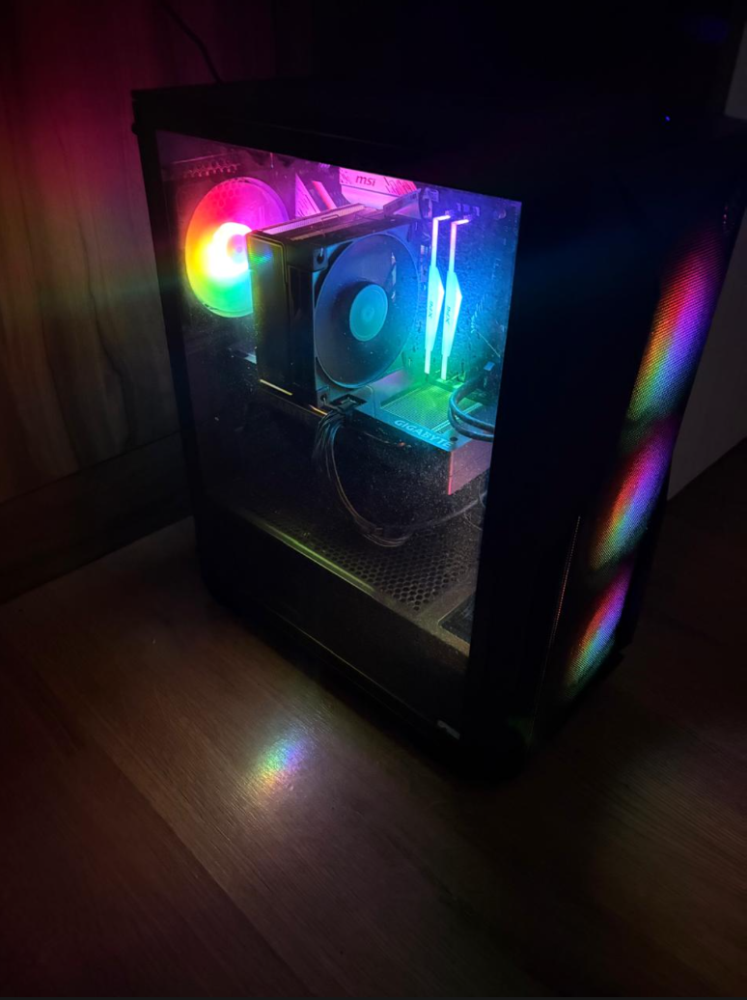

Riffs que eu componho, quase sempre tristonhos
Toco baixo e componho meus próprios riffs. Quase sempre puxam pro melancólico e nostálgico, é o som que me sai naturalmente.
Não é nada polido nem produzido pra ninguém ouvir, mas é meu.
Tenho guardados todos os riffs que fiz até agora.
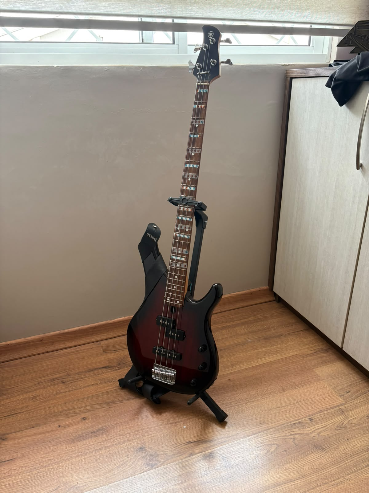
Gravava, editava e fazia a thumbnail sozinho
Tive um canal na adolescência, com vídeos principalmente de Fortnite, mas também fazia coisas mais variadas, como vídeos de Brawl Stars, CS, Titan Souls e até um vídeo de Megalovania estourado.
Eu fazia tudo sozinho: pensava o vídeo, gravava, editava e montava a thumbnail, aprendendo tudo na tentativa e erro, sem curso nenhum.
Foram uns 15 a 17 vídeos publicados. Foi ali que eu descobri que gosto de fazer coisa pra internet e ver gente usando.
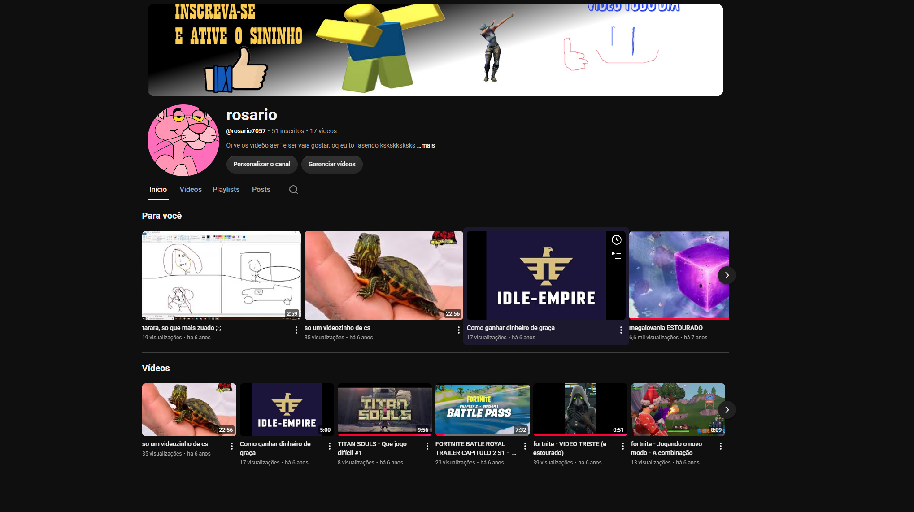
Meu jogo favorito de todos os tempos, com mais de 1.000 horas
Terraria é o meu jogo favorito de todos os tempos. São mais de 1.000 horas somando Terraria e tModLoader.
O começo é meio chato, tem que fazer tudo do zero. Mas depois que eu começo a matar os bosses o jogo fica legal, e quando entra no hardmode fica perfeito.
Boa parte dessas horas não foi matando chefe. Foi construindo. Bases, farms, sistemas complexos de fiação e arenas planejadas pra cada chefe.
Gosto de pensar bastante em como cada parte vai funcionar e depois montar tudo dentro das regras e possibilidades do jogo e dos mods.
É quase engenharia com pixel. Entender a regra do jogo e ir mexendo até virar uma coisa que funciona e ainda fica bonita.
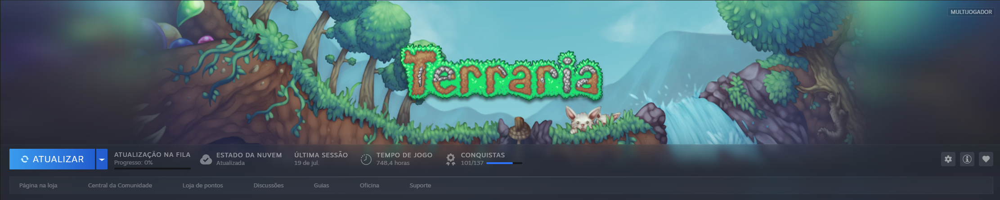
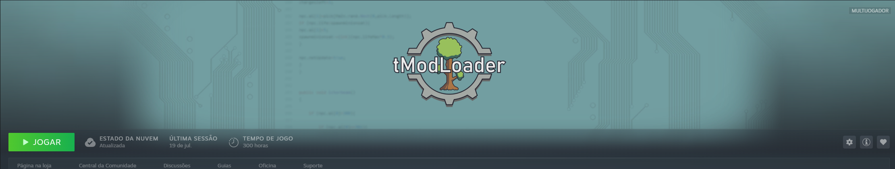
90 horas montando uma fazenda que eu acho linda
São 90 horas e uma fazenda que eu acho linda. Priorizei principalmente a produção, mas também pensei na facilidade de locomoção e um pouco na estética.
Organizei cada plantação de acordo com o tipo de planta, deixei os animais separados e organizei também as máquinas.
Na segunda foto eu tinha acabado de colher tudo, por isso o terreno está limpo. Mas dá pra ver bem os animais, as vacas, as galinhas e o coelho, e como eu dividi o espaço.
Minha parte favorita era a estufa, onde eu plantava fruta-estrela, que dava bastante dinheiro.


Kobold ladino, duas adagas e uma voz bem fina
Jogo RPG de mesa presencial. Joguei com um personagem kobold ladino, que era focado em furtividade.
Usava duas adagas, chegava escondido, atacava de perto, se escondia de novo e tentava repetir o processo.
Eu também fazia uma voz bem fina quando falava pelo personagem, tentando imaginar como seria um kobold, um dragãozinho pequeno e irritante, falando.
Montar ficha, inventar história e decidir na hora junto com o grupo é o hobby que mais se parece com trabalhar em equipe.
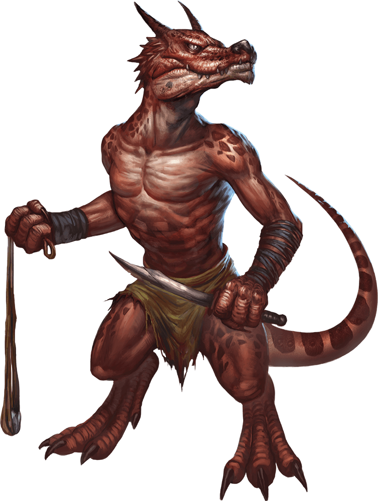
O que eu tenho na estante e por que comprei
Tenho 9 volumes de Sono Bisque Doll, que tem 15 no total, faltam 6 pra completar. E tenho 6 dos 7 volumes em português de Kaoru Hana wa Rin to Saku.
Também tenho 4 volumes de Vagabond, 5 de Chainsaw Man, 1 mangá de Pokémon, 1 de Dragon Ball Z do Jaco, 2 de Naruto e 1 de No Game No Life.
Às vezes escolho uma obra pela história, como aconteceu com Vagabond, que também me chamou atenção pela arte. Sono Bisque Doll e Kaoru Hana eu comecei a comprar porque gostei muito das obras. No caso de Chainsaw Man, eu já tinha lido a história e comecei a comprar mais pela coleção mesmo.
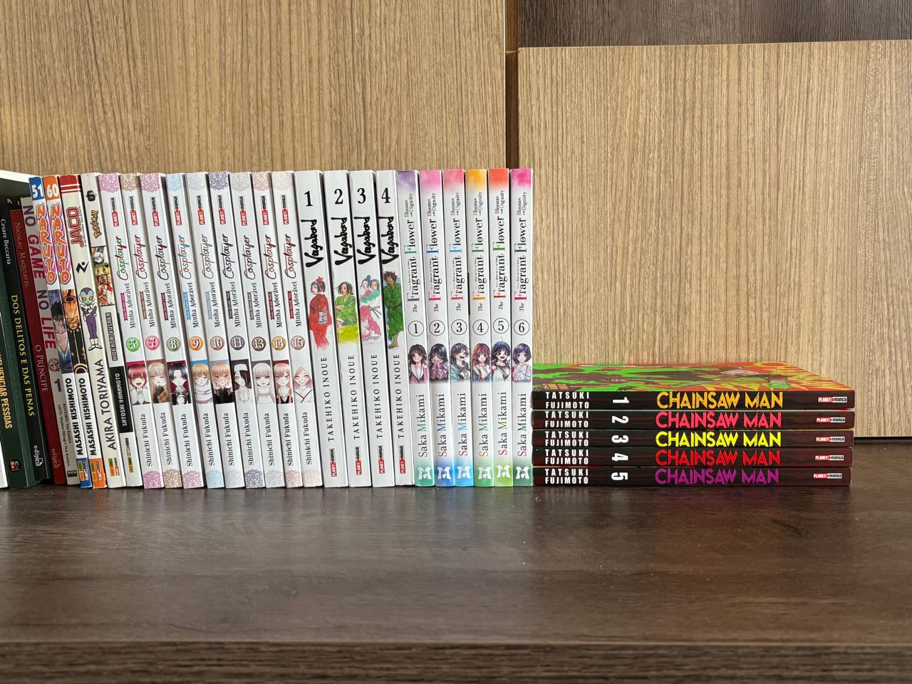
13 perfumes, um pra cada tipo de dia
Tenho 13 perfumes. Alguns são mais baratos e outros bem caros.
Gosto de amadeirados e também dos frescos, que costumo usar no dia a dia. Tenho alguns mais doces pra ocasiões como balada, romance ou encontro. E tenho outros com notas diferentes, como manga, flores e café.
Tento montar uma coleção que tenha tipos de notas e ocasiões diferentes. Escolho pelas avaliações que vejo de outras pessoas, pela fragrância e pela ocasião.
Quando é mais caro, costumo testar pessoalmente, geralmente na Sephora do Pátio Batel. Também já comprei decants de 1 ml pra testar antes. Nunca comprei um perfume e me arrependi.
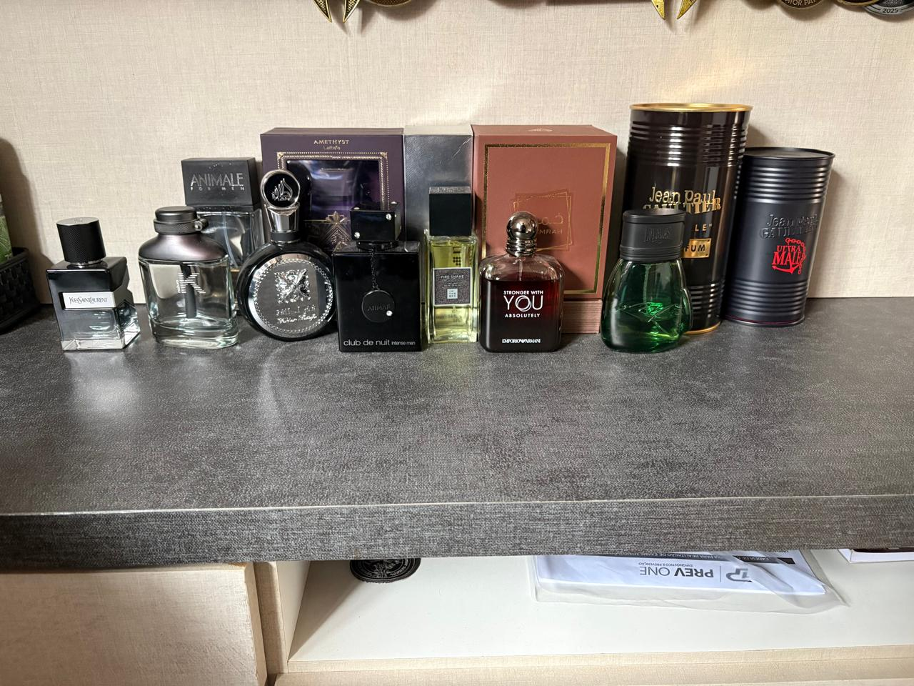
Corridas de rua, vôlei de escola e uma que vale mais que as outras
Tenho várias medalhas de participação em corridas, umas cinco ou seis, e também algumas de campeonatos.
Tenho medalha de ouro do Jogo da Amizade, de quando eu estava no sexto ou sétimo ano, medalhas de ouro de interclasse de vôlei e uma de terceiro lugar na Copa Escolar de Curitiba com o CPM, além de uma de ouro de um campeonato realizado na AVM Guaratuba.
A que mais significa pra mim é a de terceiro lugar da Copa Escolar de Curitiba. Na época o vôlei do CPM estava num período sem ganhar nada, e naquele ano nosso time conseguiu voltar pra casa com uma medalha.
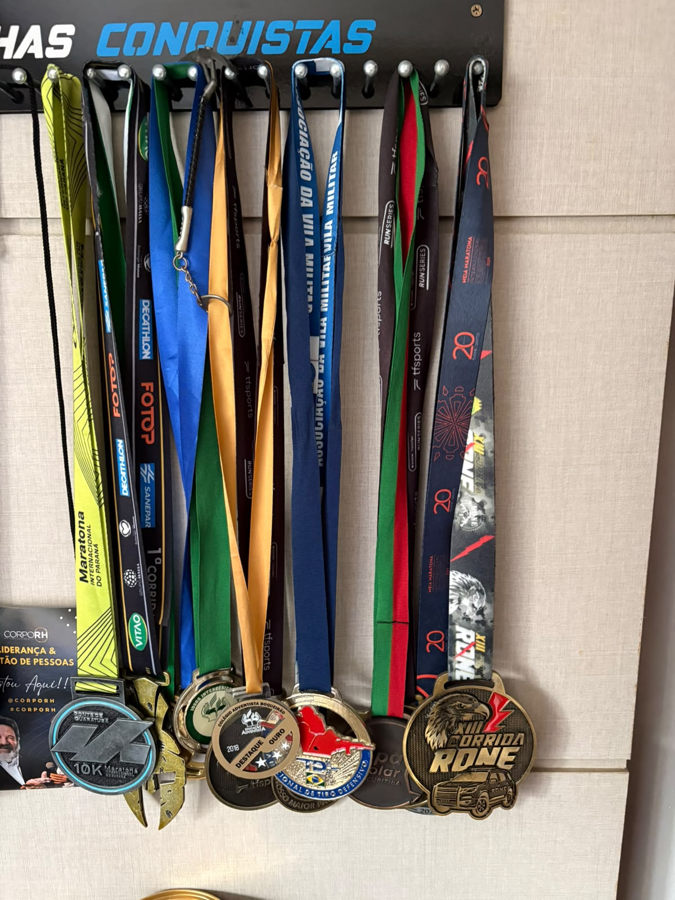
Montadas por clima, não por gênero
Tenho várias, e monto por clima, não por gênero. Cada uma serve pra um momento específico.
A ideia é que a playlist acompanhe a energia do ambiente, do foco até o descanso.
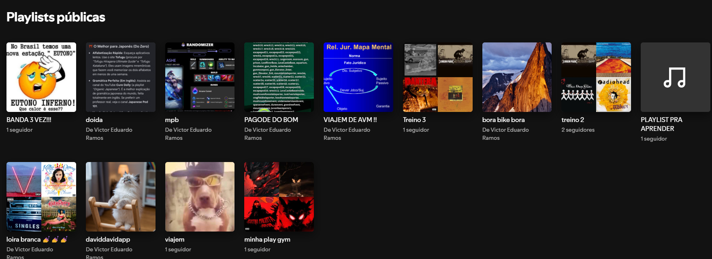
Curitiba de bicicleta e o litoral de Guaratuba
Gosto principalmente de fotografar paisagens e lugares.
Já tirei fotos no Passeio Público, no Jardim Botânico, no Parque Barigui, nas canaletas, na Avenida Sete de Setembro, na República Argentina, na Praça do Japão e em outros lugares de Curitiba, muitas vezes durante passeios de bicicleta.
Também tenho fotos de Guaratuba, incluindo a praia no nascer do sol e um riozinho que encontrei por lá.
É o meu jeito de guardar viagem. Não pelo roteiro, pelas fotos.

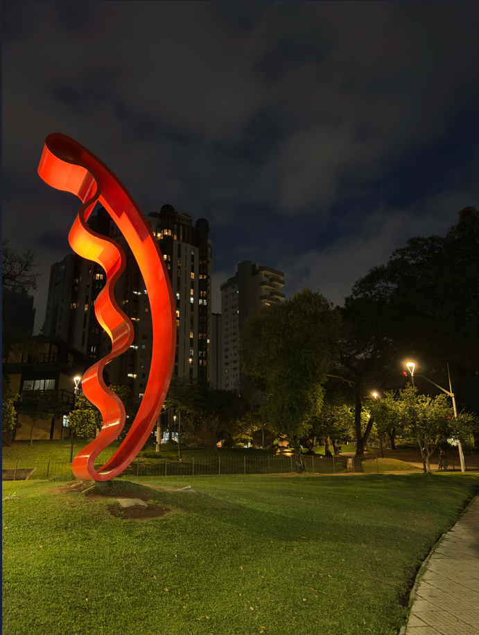
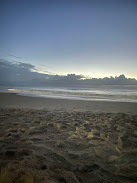
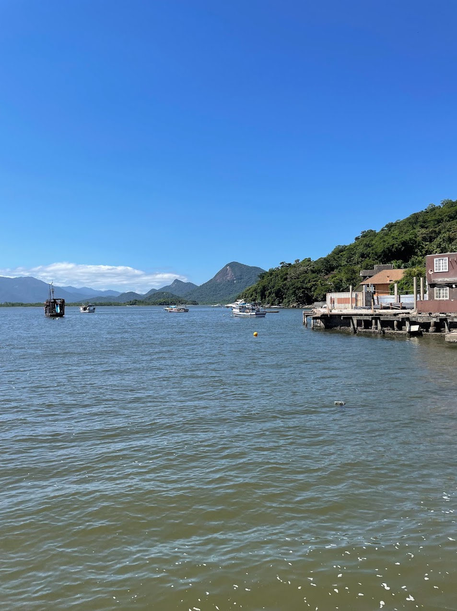
Duas vezes por ano, sem pressa nenhuma
Pesco umas duas vezes por ano, não é nada fixo, mas gosto bastante. É o que eu faço pra desacelerar: rio, represa, pesqueiro, normalmente com meu pai.
A pescaria que ficou marcada foi numa represa onde a gente só conseguiu pegar lambarizinhos pequenininhos. No fim limpamos os peixes e comemos. Foi simples, mas ficou na memória.

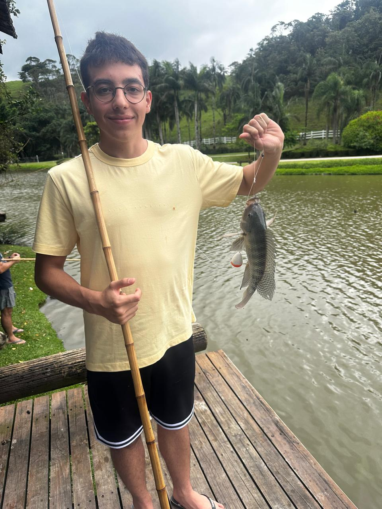
A mania de levar a bebida na temperatura certa
Já que é pra falar de mania, eu tenho um copo térmico que anda comigo pra qualquer bebida, porque eu odeio bebida esquentando no meio do caminho.